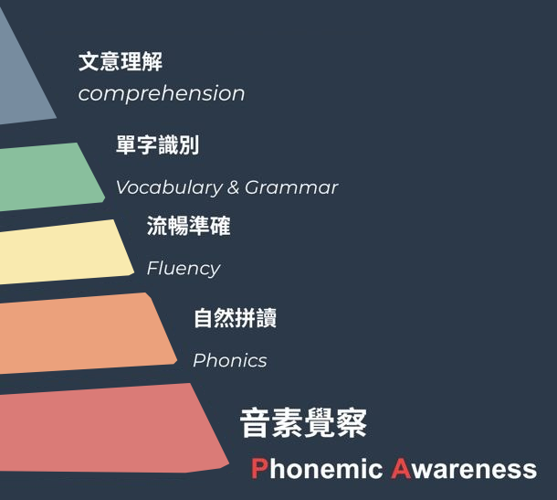

Why Science of Reading
孩子單字記不起來、拼不出來？
不是記性不好，而是少了「音素覺察」這一步。閱讀科學把學會閱讀拆成五層，一層一層往上蓋；拼讀小達人班從最底層開始。

先練耳朵聽出單字裡的每個聲音，再學聲音和字母怎麼對應。
Three Steps
三個步驟，循序漸進
1
音素覺察
先聽出單字裡的每個聲音，打好拼讀的基礎。
2
聽音會拼
聽到單字就能拼出來，搭配點讀筆在家複習。
3
看字會唸
學會字母和字母組合的發音規則，自己讀出新單字。
Every Week
每週的學習循環
上課學新的拼讀規則
作業單每週帶回家複習
錄音／錄影在家錄一段唸讀，傳到 LINE@
老師回饋一對一校正發音
老師的回饋會包含
- ⭐ 做得好：孩子這次進步的地方
- 🗣 請調整：需要再唸清楚的聲音
- 🎯 下一步：接下來的練習重點
Next Step
下一階段：拼讀字典班
完成拼讀小達人班後，第二階段的拼讀字典班會開始練習唸拼讀字典和英文草寫，這兩項都是記憶單字的重要技能。
📖 自己唸拼讀字典手指著字典，一個字一個字唸出來
✏️ 練習英文草寫一筆一筆，專心寫好每個字母
以上為拼讀字典班課堂示意畫面。為保護孩子隱私，只拍手部並已移除聲音。
Course Details
課程資訊
| 對象 | 大班以上（6 歲以上） |
|---|---|
| 開課 | 2026/12/16（三） |
| 時間 | 每週三 17:00–18:30 |
| 學程 | 全套 40 堂・共 60 小時 分兩期，各 20 堂 |
| 地點 | 城上城分校 基隆市麥金路 193 號 2 樓 開啟地圖 |
| 人數 | 6 人開班・12 人滿額 |
| 學費 | 每期 NT$15,000 |
| 教材費 | NT$6,000（三冊點讀教材＋點讀筆） 兩期共用，只在上期繳一次 |
| 報名 | 城上城幼兒園：回條請於 11/30（一）前繳回 其他學校：線上選課單報名 |
Your Teacher
授課老師
Jessie 老師
現任吉的堡城上城分園美語部主任；輔大英文、哲學雙主修，曾赴美國 Columbia 等校進修。曾任 SoR 美語 臺北旗艦殿殿長・師資。